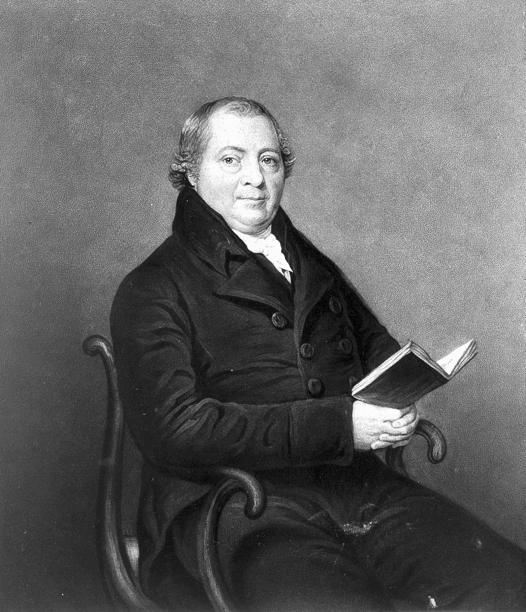
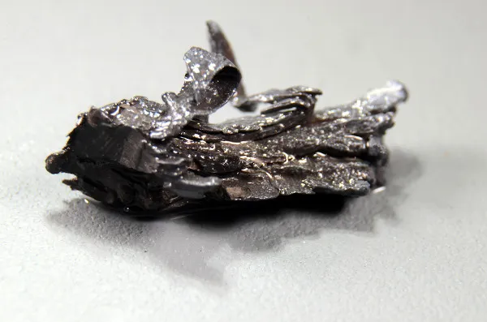
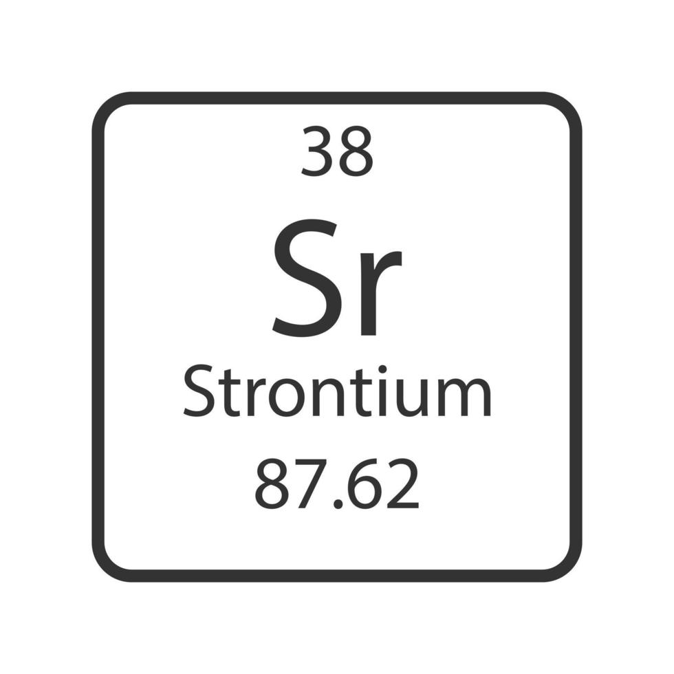

Estrôncio
O estrôncio é um elemento químico metálico, pertencente ao grupo dos metais alcalino-terrosos. Seu comportamento químico se assemelha aos demais elementos do grupo 2.
Seu símbolo na tabela periódica é Sr e seu número atômico é 38.
Principais características
Nome: Estrôncio
Símbolo: Sr
Nome em inglês: Strontium
Número atômico: 38
Estado em temperatura ambiente: Sólido
Aparência: Branco-prateado, metálico e brilhante.
Propriedades: É macio, maleável, dúctil, altamente reativo e relativamente frágil.
História da descoberta
Em 1787, uma pedra incomum chamada estroncianita foi encontrada em uma mina de chumbo em Strontian, na Escócia, e recebeu o nome da localidade.
Na época, acreditava-se que o mineral era bário. O material foi analisado pelo químico irlandês Adair Crawford e por William Cruikshank.
Adair Crawford publicou posteriormente um estudo indicando que aquele mineral não era bário, mas estava relacionado a um novo elemento químico.
O cientista irlandês Thomas Charles Hope também estudou o novo elemento. Durante seus experimentos, observou que seus compostos produziam uma chama de coloração vermelha.
Na Alemanha, Martin Heinrich Klaproth também estudou o mineral e produziu compostos de estrôncio.
Em 1808, o químico inglês Humphry Davy isolou o estrôncio metálico por meio da eletrólise.
O nome do elemento veio de Strontian, o vilarejo escocês onde a estroncianita foi encontrada.

Ocorrência na natureza
O estrôncio pode ser encontrado principalmente na crosta terrestre. Porém, devido à sua elevada reatividade química, ele não costuma ser encontrado na natureza em sua forma metálica pura.
Ele ocorre principalmente combinado com outros elementos, formando compostos presentes em minerais, rochas e na água.
Celestita ou Celestina: sulfato de estrôncio (SrSO₄).
Estroncianita: carbonato de estrôncio (SrCO₃).
Uso no cotidiano
- Fogos de artifício
- Cremes dentais dessensibilizantes
- Ímãs de ferrite
Importância e riscos
O estrôncio é encontrado naturalmente em minerais e pode estar presente em pequenas quantidades no solo, na água e nos alimentos.
Apesar de não ser considerado um elemento essencial para o organismo humano, o estrôncio apresenta semelhança química com o cálcio. Por esse motivo, pequenas quantidades podem ser incorporadas aos ossos e dentes.
Alguns compostos de estrôncio já foram estudados e utilizados em aplicações relacionadas à saúde óssea. Seus efeitos dependem da forma química, da quantidade e do tempo de exposição.
O estrôncio estável geralmente apresenta baixa toxicidade nas quantidades normalmente encontradas nos alimentos e na água. Porém, uma exposição elevada pode interferir no metabolismo do cálcio e afetar o desenvolvimento dos ossos.
Existe também o estrôncio-90, um isótopo radioativo produzido principalmente pela fissão nuclear.
Diferentemente do estrôncio estável, o estrôncio-90 representa um risco significativo à saúde porque emite radiação beta e pode se comportar de maneira semelhante ao cálcio no organismo.
Quando incorporado ao organismo, ele pode se acumular nos ossos e aumentar a exposição à radiação, podendo causar danos celulares.
Portanto, os riscos do estrôncio dependem principalmente de sua forma química, da quantidade de exposição e, no caso do estrôncio-90, de sua radioatividade.
Imagens
Amostra de Estrôncio

Estrôncio na Tabela Periódica
